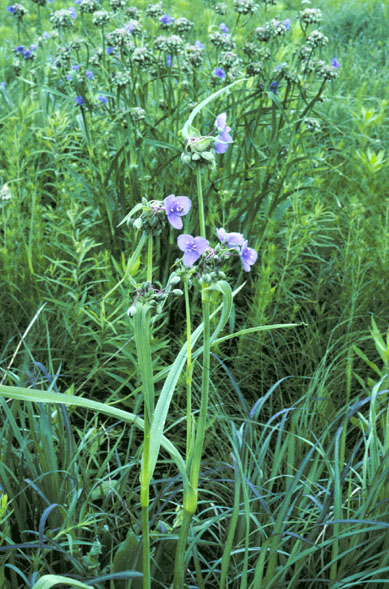
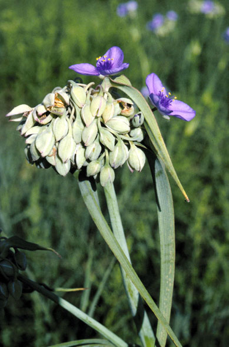
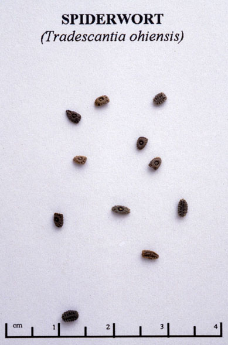

Tradescantia Ohiensis
Family: Commelinaceae
Common Spiderwort
Swink/Wilhelm #2


Click to view larger photo
FLOWERING: Early June to mid-October
SEED TIMING: Late June to early September
HABITAT: Prairie and wood edges
DIAGNOSTIC FEATURES: 1 - 3 feet. Smooth, erect perennial with linear, grass-like leaves and loose clusters of bright blue, 3-petaled flowers with showy yellow stamens above a pair of long, narrow leaf-like bracs. Flowers close up in the afternoon.
TO PICK: Flowers open, mature and go to seed continuously over the season. Ripe seed is pickable when some flowers are still in bloom.